library(quanteda)
library(quanteda.textstats)
library(quanteda.textplots)
library(quanteda.textmodels)
library(ggplot2)
library(tidyverse)Assignment 4: Text analytics with quanteda
US presidential inaugural speeches
The data_corpus_inaugural object is included with current quanteda lib. Older setups used the add-on quanteda.corpora; the code below loads whichever is available. After preprocessing, documents are compared with cosine similarity on grouped DFMs and with keyness across historical periods.
corp_inaug <- tryCatch(
quanteda::data_corpus_inaugural,
error = function(e) {
if (!requireNamespace("quanteda.corpora", quietly = TRUE)) {
stop(
"Could not load data_corpus_inaugural from quanteda. ",
"Run install.packages(\"quanteda\") to upgrade, or install.packages(\"quanteda.corpora\").",
call. = FALSE
)
}
quanteda.corpora::data_corpus_inaugural
}
)
toks_inaug <- tokens(corp_inaug, remove_punct = TRUE, remove_numbers = TRUE) |>
tokens_remove(stopwords("english"))
dfmat_inaug <- dfm(toks_inaug)
# One aggregated document per president → similarity between presidencies
dfm_pres <- dfm_group(dfmat_inaug, groups = President)
sim_pres <- textstat_simil(dfm_pres, method = "cosine")
as.matrix(sim_pres)[1:6, 1:6] Adams Biden Buchanan Bush Carter Cleveland
Adams 1.0000000 0.3257184 0.6123686 0.4497324 0.3666068 0.6023122
Biden 0.3257184 1.0000000 0.2853109 0.6639523 0.5056971 0.3376773
Buchanan 0.6123686 0.2853109 1.0000000 0.3814575 0.2866914 0.5192144
Bush 0.4497324 0.6639523 0.3814575 1.0000000 0.5630333 0.4030550
Carter 0.3666068 0.5056971 0.2866914 0.5630333 1.0000000 0.3674878
Cleveland 0.6023122 0.3376773 0.5192144 0.4030550 0.3674878 1.0000000# Cosine similarity as a heatmap-style view (all presidents in grouped DFM)
sim_mat <- as.matrix(sim_pres)
diag(sim_mat) <- NA
ord <- hclust(as.dist(1 - sim_mat), method = "average")$order
sim_ord <- sim_mat[ord, ord]
sim_long <- sim_ord |>
as.data.frame() |>
tibble::rownames_to_column("President_A") |>
pivot_longer(-President_A, names_to = "President_B", values_to = "cosine") |>
filter(!is.na(cosine))
sim_long$President_A <- factor(sim_long$President_A, levels = rownames(sim_ord))
sim_long$President_B <- factor(sim_long$President_B, levels = colnames(sim_ord))
ggplot(sim_long, aes(x = President_A, y = President_B, fill = cosine)) +
geom_tile(color = "white") +
scale_fill_viridis_c(option = "C", na.value = "grey90") +
labs(
title = "Cosine similarity between inaugural corpora (by president)",
subtitle = "Each cell pools all inaugural speeches for that president; diagonal omitted.",
x = NULL, y = NULL, fill = "Cosine"
) +
theme_bw(base_size = 11) +
theme(axis.text.x = element_text(angle = 45, hjust = 1))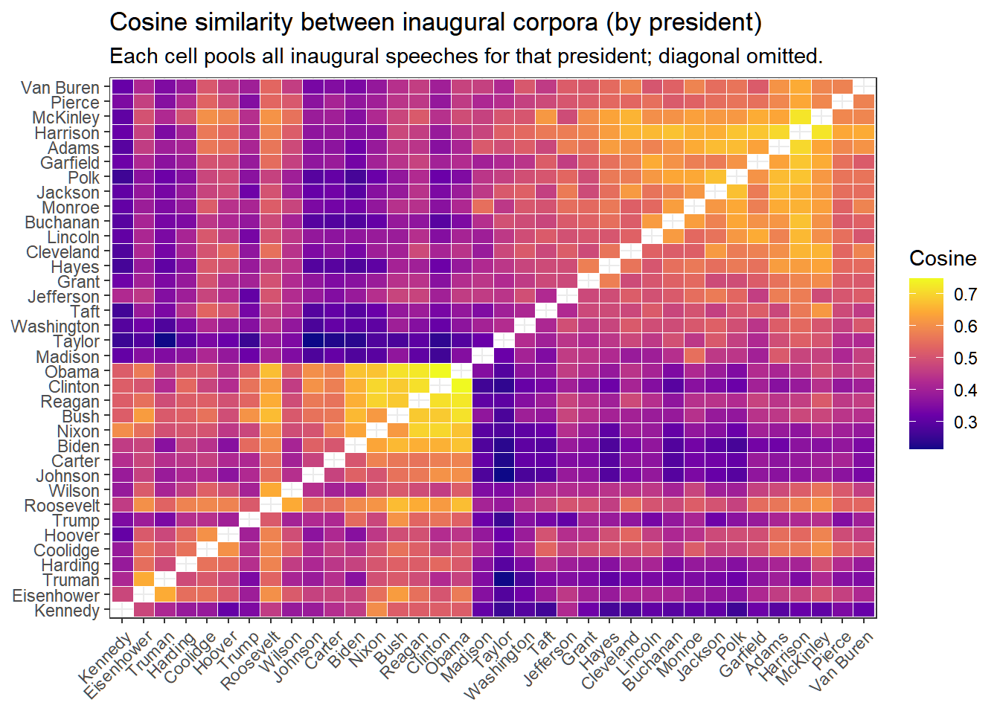
Similarity highlights which presidents reuse overlapping vocabulary when pooled across all their inaugurals (length and era affect the measure). Differences overtime can be summmarized by contrasting early versus recent periods.
year_doc <- docvars(corp_inaug, "Year")
early <- year_doc < 1900
recent <- year_doc >= 2001
tstat_era <- textstat_keyness(
dfmat_inaug,
target = recent,
reference = early,
measure = "lr"
)
textplot_keyness(tstat_era, n = 18, margin = 0.15, color = c("steelblue", "tomato3")) +
labs(
title = "Keyness: recent inaugurals (2001+) vs. before 1900",
subtitle = "Which terms are more characteristic of each era (LR)?"
) +
theme_bw(base_size = 12)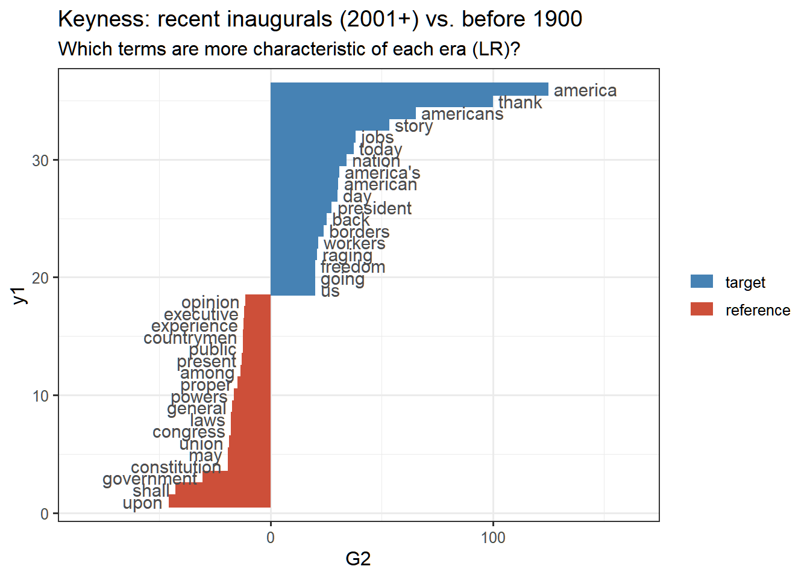
# Party contrasts (Democratic vs Republican inaugurals in this corpus)
party <- docvars(corp_inaug, "Party")
tstat_party <- textstat_keyness(
dfmat_inaug,
target = party == "Democratic",
measure = "lr"
)
textplot_keyness(tstat_party, n = 15, margin = 0.15, color = c("#2171b5", "#cb181d")) +
labs(title = "Keyness: Democratic vs. Republican inaugural speeches") +
theme_bw(base_size = 12)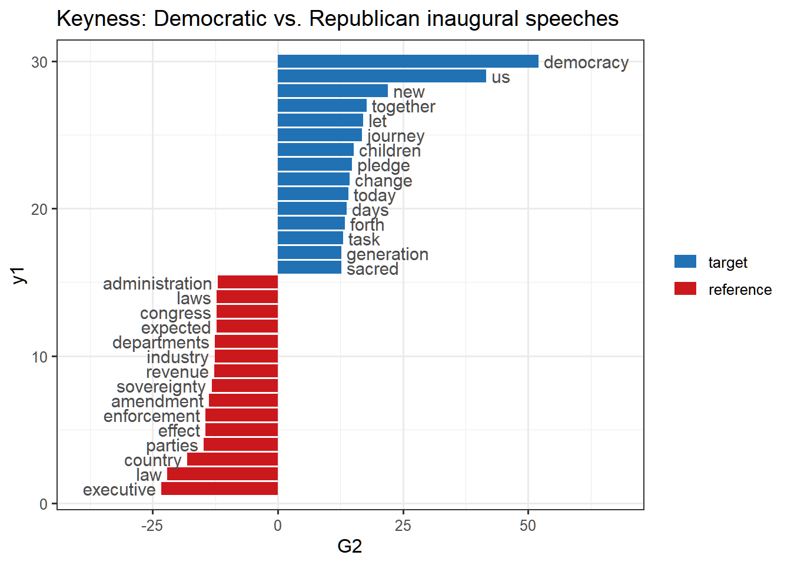
Takeaway. Inaugurals cluster by president when aggregated, reflecting stable rhetorical habits within a life’s speeches. Keyness separates centuries and parties, surfacing vocabulary that is era-specific (institutions, geopolitics) or aligned with party branding, even though inaugural rhetoric is highly ceremonial.
Wordfish
Comparing positions: Wordfish, correspondence analysis, and similarity
- Wordfish gives a one-dimensional ideological or emphasis scale with uncertainty and word parameters; good when a single latent dimension dominates (e.g. strategic framing in recurring reports).
- Correspondence analysis (
textmodel_ca()) finds low-dimensional structure (often two axes for plotting) without a Poisson story; axes are orthogonal and interpretable as association patterns, not necessarily a single “left–right” line. - Cosine similarity (
textstat_simil()) compares whole document or group profiles in feature space but does not produce a latent scale; it is complementary for “who looks like whom.”
US Department of Defense reports (wordfish02.R)
source(
"wordfish02.R",
encoding = "UTF-8",
print.eval = TRUE,
local = knitr::knit_global()
)Found 27 PDF filesSuccessfully loaded 27 reports spanning 1999 to 2025
Corpus consisting of 27 documents, showing 5 documents:
Text Types Tokens Sentences year president
USDOD_1999.pdf 16068 301499 10250 1999 Clinton
USDOD_2000.pdf 2990 15078 540 2000 Clinton
USDOD_2001.pdf 14864 186149 6246 2001 Bush
USDOD_2002.pdf 4178 25908 1051 2002 Bush
USDOD_2003.pdf 4068 25848 957 2003 Bush
Biden Bush Clinton Obama Trump Trump II
4 8 2 8 4 1
DFM dimensions: 27 27464
Documents: 27 | Features: 27464 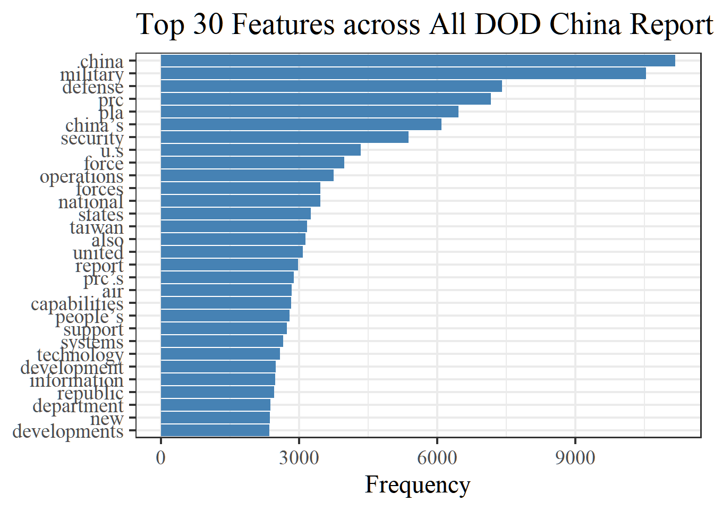
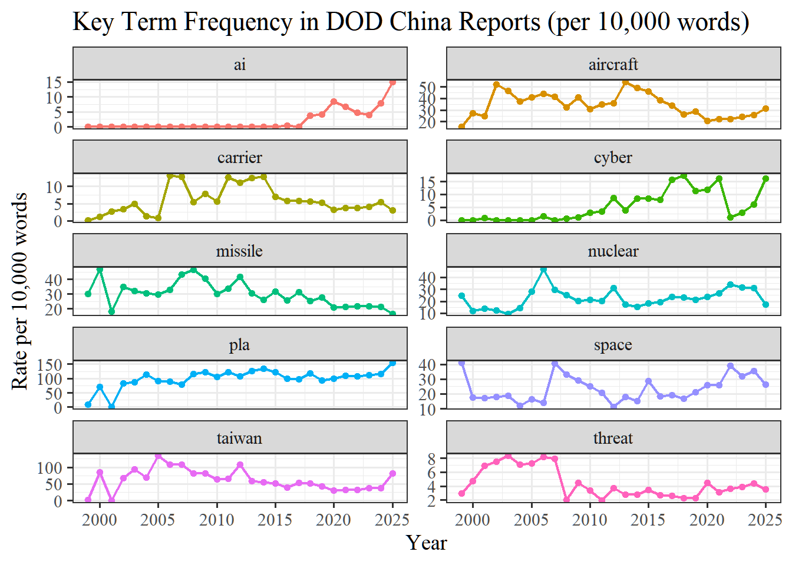
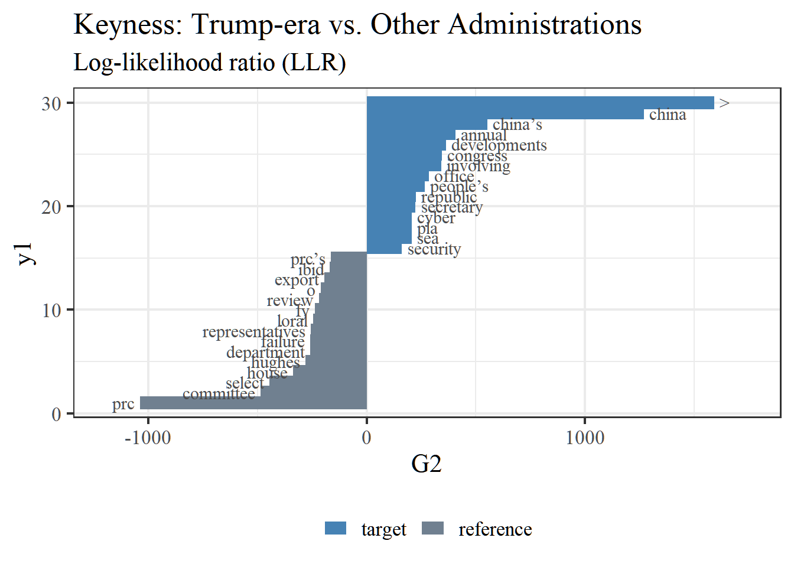
collocation count count_nested length lambda z
1 military security 2043 0 2 4.128573 136.07717
2 report congress 1841 0 2 8.113547 130.40135
3 united states 1868 0 2 9.438579 117.85319
4 annual report 1842 0 2 8.581998 117.79561
5 security developments 2007 0 2 7.529940 112.39060
6 congress military 1784 0 2 5.893082 111.29157
7 involving people’s 1996 0 2 9.568945 102.95521
8 DEFENSE annual 1493 0 2 9.452197 102.00598
9 developments involving 2008 0 2 10.735301 99.30482
10 ballistic missile 588 0 2 6.117265 99.15125
11 ballistic missiles 517 0 2 6.335754 97.11052
12 air force 724 0 2 4.535028 96.96035
13 long march 489 0 2 7.918043 92.97652
14 national security 776 0 2 3.982422 91.60292
15 theater command 444 0 2 6.403907 90.78121
16 review committee 420 0 2 6.658766 89.56076
17 people’s republic 2351 0 2 10.957725 87.67401
18 national defense 698 0 2 3.731231 83.45899
19 independent review 466 0 2 8.626357 83.12520
20 o o 318 0 2 8.264850 79.46064
collocation count count_nested length lambda
1 defense technology security 128 0 3 5.491560
2 military security developments 2004 0 3 9.600290
3 forces china taiwan 54 0 3 3.705999
4 security development interests 95 0 3 5.560053
5 use military force 37 0 3 5.567996
6 national people’s congress 59 0 3 8.870559
7 security strategy military 34 0 3 3.705936
8 strategic support force 58 0 3 3.484399
9 technology security administration 116 0 3 6.864390
10 security developments involving 2003 0 3 8.931163
11 people’s republic china 2338 0 3 7.521485
12 military strategic guidelines 75 0 3 7.708746
13 u.s national weapons 38 0 3 2.779324
14 air defense systems 77 0 3 2.681339
15 report congress military 1784 0 3 11.678788
z
1 17.745103
2 14.582708
3 12.975573
4 12.311551
5 11.575311
6 11.080896
7 10.605510
8 9.759830
9 9.671924
10 8.582845
11 8.320040
12 8.072079
13 7.979257
14 7.954097
15 7.505240
Anchor documents: USDOD_1999.pdf (early) and USDOD_2025.pdf (late)
Call:
textmodel_wordfish.dfm(x = dfmat_wf, dir = c(anchor_early, anchor_late))
Estimated Document Positions:
theta se
USDOD_1999.pdf -4.207588 0.004153
USDOD_2000.pdf -0.390048 0.044274
USDOD_2001.pdf -1.620679 0.012955
USDOD_2002.pdf -0.592040 0.034528
USDOD_2003.pdf -0.419041 0.033182
USDOD_2004.pdf -0.239365 0.032227
USDOD_2005.pdf -0.258012 0.036257
USDOD_2006.pdf -0.154419 0.032662
USDOD_2007.pdf -0.124346 0.034982
USDOD_2008.pdf 0.005887 0.025718
USDOD_2009.pdf 0.029329 0.023079
USDOD_2010.pdf 0.054798 0.022772
USDOD_2011.pdf 0.118326 0.019899
USDOD_2012.pdf 0.124458 0.032058
USDOD_2013.pdf 0.310564 0.017454
USDOD_2014.pdf 0.366308 0.015956
USDOD_2015.pdf 0.414408 0.013758
USDOD_2016.pdf 0.486486 0.011620
USDOD_2017.pdf 0.583284 0.009979
USDOD_2018.pdf 0.638408 0.007349
USDOD_2019.pdf 0.657588 0.006869
USDOD_2020.pdf 0.695446 0.004273
USDOD_2021.pdf 0.711583 0.003524
USDOD_2022.pdf 0.703120 0.003745
USDOD_2023.pdf 0.772127 0.001359
USDOD_2024.pdf 0.721475 0.002933
USDOD_2025.pdf 0.611940 0.008589
Estimated Feature Scores:
volume select committee house representatives session submitted
beta -1.0469 -1.3581 -0.9316 -1.515 -1.253 -0.21097 -0.5357
psi -0.2393 -0.3581 1.8192 -1.293 -0.199 0.07625 -0.4235
mr cox california chairman january committed whole ordered
beta 0.05891 -2.157 -0.5698 -0.0576 -0.04423 -0.06522 0.0869 0.5645
psi 1.16596 -7.919 -0.8807 2.2986 2.11627 0.80251 0.5139 0.2797
subject review amended 1st washington note final peoples approved
beta -0.5419 -0.9644 -0.2182 0.3005 -0.3680 0.2141 -0.4916 -1.254 -0.5488
psi 0.4656 0.7948 0.3529 0.3242 0.9478 1.5388 0.5241 -4.031 0.0689
served version classified top secret issued
beta 0.3137 0.0003564 -0.7582 0.1922 -0.4143 -0.2331
psi 1.5902 1.3162275 -0.2214 1.8753 -0.7545 1.0297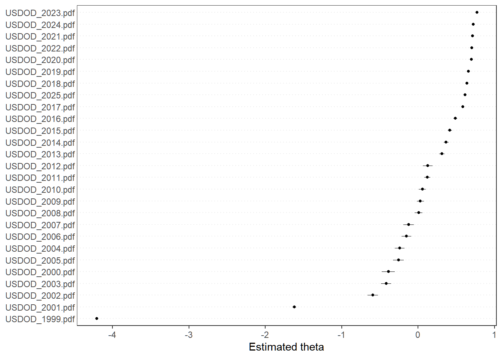
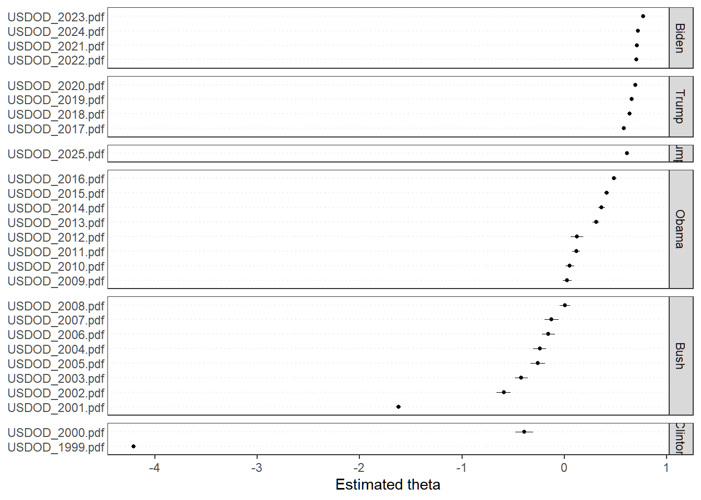
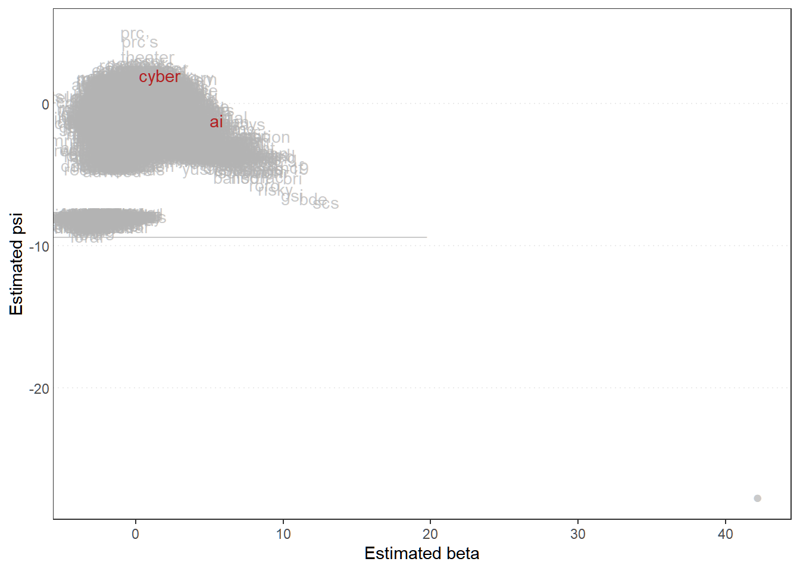
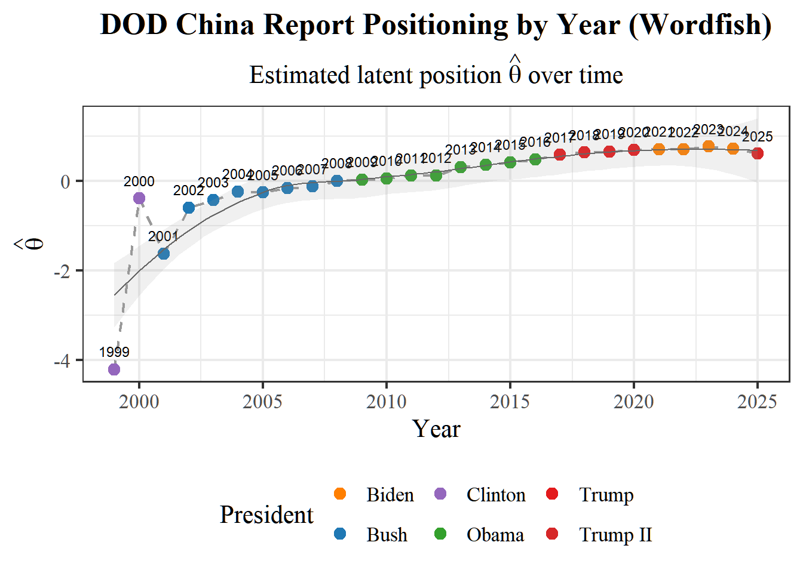
Document lengths (tokens):
USDOD_2000.pdf USDOD_2012.pdf USDOD_2007.pdf USDOD_2005.pdf USDOD_2006.pdf
2445 2559 3095 3291 3670
USDOD_2004.pdf USDOD_2003.pdf USDOD_2002.pdf USDOD_2008.pdf USDOD_2013.pdf
4098 4443 4531 4844 5645
USDOD_2010.pdf USDOD_2014.pdf USDOD_2009.pdf USDOD_2017.pdf USDOD_2015.pdf
5730 5746 5808 6483 6625
USDOD_2011.pdf USDOD_2016.pdf USDOD_2025.pdf USDOD_2019.pdf USDOD_2018.pdf
6722 7175 7592 8867 8894
USDOD_2020.pdf USDOD_2021.pdf USDOD_2022.pdf USDOD_2024.pdf USDOD_2023.pdf
15090 16822 17382 19707 20603
USDOD_2001.pdf USDOD_1999.pdf
40295 80515 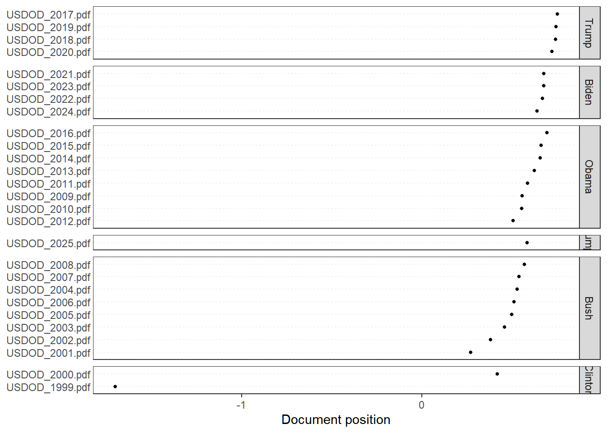
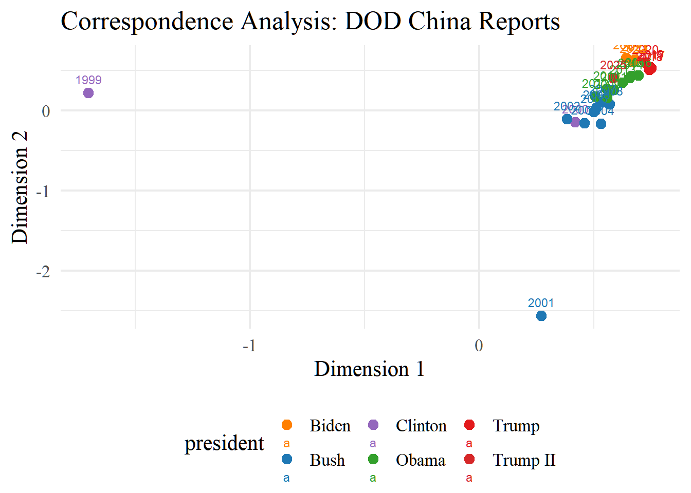
LDA fitting (k=5): 44.83 sec elapsed
Topic 1 Topic 2 Topic 3 Topic 4 Topic 5
[1,] "prc" "pla" "china" "china’s" "defense"
[2,] "u.s" "operations" "aircraft" "national" "military"
[3,] "department" "taiwan" "missile" "prc’s" "china"
[4,] "committee" "capabilities" "air" "china" "security"
[5,] "launch" "forces" "nuclear" "states" "people’s"
[6,] "export" "force" "missiles" "military" "republic"
[7,] "satellite" "support" "sea" "security" "developments"
[8,] "select" "military" "first" "united" "report"
[9,] "united" "joint" "plan" "strategy" "congress"
[10,] "states" "systems" "force" "prc" "secretary" 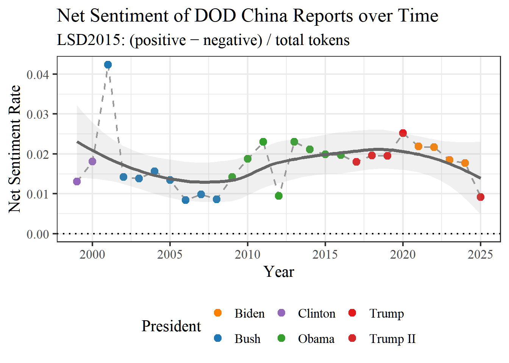
========== ANALYSIS SUMMARY ==========
Reports analyzed: 27
Year range: 1999 - 2025
Presidents: Clinton, Bush, Obama, Trump, Biden, Trump II
DFM dimensions: 27 27464
Wordfish theta range: -4.208 0.772
=======================================